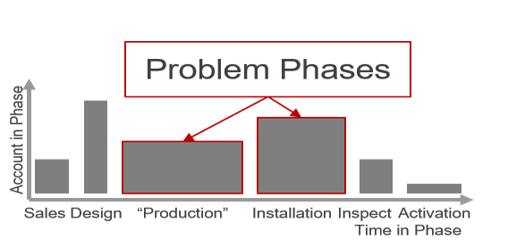

Select Projects From Cicero
Note all figures and some aspects of the stories below have been changed to protect the client’s privacy
Alternative Energy Provider
One of my first projects was a company that was phenomenal at sales, but struggling to fulfill orders. It could take longer than one year from the time the customer signed the agreement until the power is on and the company earning revenue.
Our task was to bring teams together to find friction points, map the value chain, and recommend quick wins.
I interviewed upwards of two dozen individuals across all teams, becoming an expert in the company’s process. Using several six sigma techniques, I mapped the process in a way the C-suite could easily see problem areas and pain points.
We made 100’s of recommendations to company management, prioritized into actionable plans. The recommendations minimized the amount of rework performed, clarified account ownership, and brought intracompany cooperation between phases.
Medical School
I am most proud of my work at Cicero for a medical school. Unfortunately, alumni were not likely to stay engaged with the university. The university had not done a good job of tracking alumni and key statistics were needed for marketing and legal use.
We were tasked with conducting a massive search of all publically available sources. I led of team of 12 analysts for several months.
At one point during the projects, I noticed an opportunity for improvement regarding a critical data point. I proposed an automated web-scrape. With permission, I worked with a developer and saved the project $17,000 in hourly costs. This cost saving was reinvested to over-deliver to the client.
The online search provided over 1 million data points for over 95% of the school’s alumni. The cost saving made it extremely profitable project and we over-delivered by creating a robust alumni look-up tool in Excel for the legal team.
Waste Service Provider
I worked extensively with a Fortune 500 waste service provider on several projects including organizational design, customer segmentation and product innovation (it is challenging to develop, test and model products in this highly traditional industry, we used conjoint studies to model price and demand). Additionally, I was the point of contact for a longitudinal customer satisfaction report.
While I maintained an online dashboard, many mangers were not actively seeking to improve key measures.
By combining with company financials, we tied each business units customer satisfaction to an increase in revenue thus providing managers with motivation to excel. The satisfaction metric was modelled using a logistic regression.
I created a one-page report tailored to each of the 50+ business units and provided managers with both the tools to succeed and the motivation to increase customer satisfaction.
Leadership Consulting Firm

One of my most challenging projects was working with a leadership consulting firm. The firm was funding the publishing the sequel to a New York Times best-seller on leadership. This future best-seller needed research-based conclusions.
We were tasked with finding a simple and systematic way to scientifically test 500 prevailing leadership theories. We then needed to see which theories worked across different demographics.
Using primary research, we developed a clever way to ask about the effectiveness of a leader using a composition score of several questions. Using factor reduction, we narrowed the list from 500 theories to the core elements of 20. This list of 20 was again tested.
The study went to workers on every continent and across both large and small companies. Ultimately, if was difficult to isolate any ‘secret sauce’ to leadership as it is very esoteric. However, our findings showed which leadership methods were most effective in different situations.
Regional Credit Union
A large credit union enlisted our help in proving out the business value of aggregating their separate data systems into a data warehouse. When I came onto the project, 8 different sub-projects had been chosen including identifying customers life events, predicting CD purchasers, and improving deposits.
The first and most arduous task was bringing together the companies different data sources, including bank records, CRM data, and the customer satisfaction system.
Identifying life events was really fun. You can tell a lot about a person based on their bank records. It is easy to see pay increases, cash windfalls, children, retirement, etc. We also created a predictive model to see which customers were most likely to purchase a CD.
Additionally, we worked with the client to test our model by advertising CDs to our list of predicted customers. Over 90% made the purchase. All 8 sub-projects were very impactful (and profitable) for the client.
Online Payday Loan Lender
My favorite client and project at Cicero was an online lender of small loans (aka payday loans). The industry was truly fascinating. Our mandate was broad and opened-end: help the company improve business in a data-driven manner.
The client’s data was well organized and very rich. Through exploratory analysis we identified four key profitability-increasing measures of success including default rate and returning customer rate. We then looked at what customer attributes improved these measures.
We used several methods of variable reduction to see which customer attributes really affected our indicators. We then created linear models for each indicator.
Originally, the client really wanted binary gates when deciding which customers to fund. However, we convinced the client to used a scoring method based on our models and take the top customers. We found several highly-impactful, quick wins. One of the most influential factors on default rate: customer’s operating system!